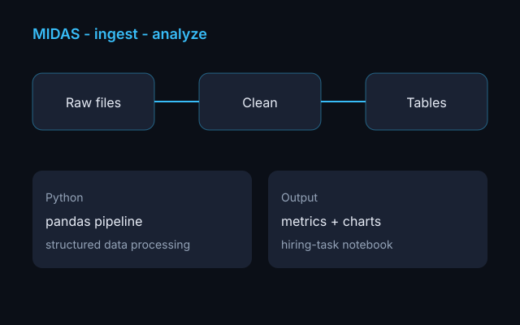
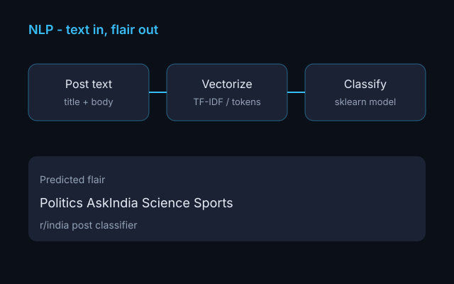
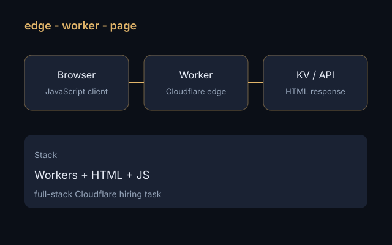
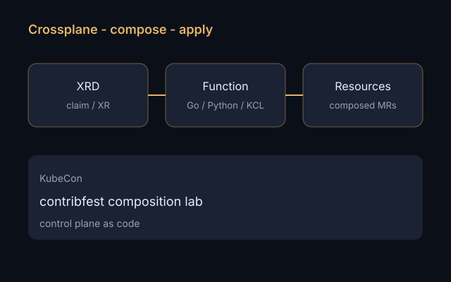

2024 — Present
Automation Engineer · Zotec Partners
Building automation, integrations, and tooling that streamline workflows and improve reliability across operational systems — file transfer, HL7, and the monitors around them.

Automation Engineer
I build automation, integrations, and data workflows that turn repetitive work into reliable systems.
I'm an Automation Engineer at Zotec Partners in Carmel, Indiana. I design scripts, integrations, and data workflows that keep operational systems moving — from HL7 and SFTP pipelines to the audit trail that tells you what actually happened.
Before this I completed an MS in Technology Leadership & Innovation at Purdue University, with research in NLP, computational social science, and how data scientists actually debug notebooks. I still write about the labs behind the work: managed file transfer, healthcare interfaces, and giving agents real tools.
When I'm not in a job log, I'm usually building something small enough to fail closed — then writing it up.
Building automation, integrations, and tooling that streamline workflows and improve reliability across operational systems — file transfer, HL7, and the monitors around them.
Resolved service tickets involving HL7 files, pipeline logs, patient payment data, and client credentials — a foundation in healthcare data operations.
Coursework and thesis work spanning NLP, data science, and computational research — including text classification, misinformation, and social data analysis.
Led a student community of 15–20 builders, mentoring peers on web projects, apps, and technical experimentation.

Validate inbound files, transform them to JSON, deliver over SFTP or locally, and audit every attempt. Terraform for a local Docker landing zone and AWS S3 ingest.

Parse HL7 v2 into JSON and reject bad messages with stable error codes — missing control IDs, ADT/ORU without PID.

Python data pipeline and analysis project showcasing structured data processing.

NLP pipeline for classifying Reddit post flair from text content.

Full-stack JavaScript application with modern deployment patterns.

KubeCon hands-on work with Crossplane composition functions and Kubernetes tooling.
Publications from Purdue, listed on Google Scholar.
Data science work happens in notebooks, not production IDEs — and most mistakes never make it into a git commit. We analyzed 390 Jupyter notebooks from a six-week competition plus interviews with 10 practitioners, and found 5 debugging operations and 12 fix patterns that existing GitHub/Kaggle studies miss.
Graduate students are asked to grow as researchers, professionals, and people at the same time — and most advising frameworks only cover one of those. This thesis evaluates an Individual Development Plan tailored to Purdue Polytechnic, treating the IDP as a student-centered tool that ties academic, career, and personal goals to structured feedback.
Labs and platforms behind the work I do now — MFT, HL7, and giving agents real tools.
Resources, projects, monitors, audit. How a partner drop actually moves — and what I open first when it does not.
Give Cursor real tools — inbox status, file hashes — from one Python file. stdio locally, Streamable HTTP when you host it.
Inbox, validate, transform to JSON, deliver over SFTP or locally, and write every attempt to an audit log.
Parse HL7 v2 into JSON and fail with a stable error code when MSH-10 is empty or an ADT has no PID.
Open to conversations about automation, integrations, and data workflows — keimmanthan@gmail.com.
© Manthan Keim. Layout inspired by Brittany Chiang.